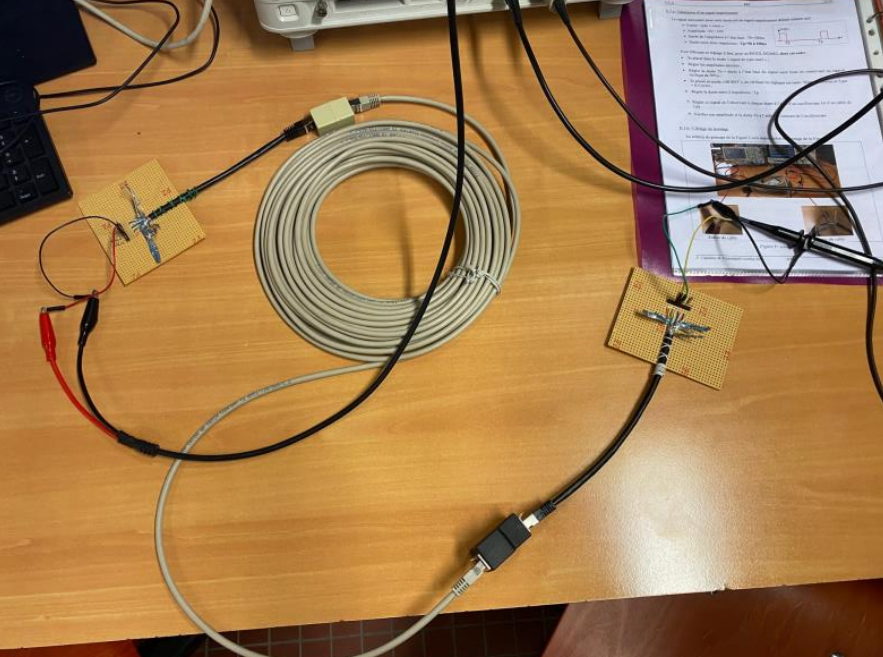

Retour
Accueil
À propos de moi
Formation
Expérience professionnelle
Compétences
Projets
Divers
Compétence : Télécommunications
Étude d'un câble Ethernet

Missions :
Observation de l'intérieur du câble Ethernet.
Mesure de la résistance avec un multimètre.
Création d'un signal impulsionnel.
Réalisation du montage.
elevé du temps de propagation entre les 2 signaux.
Décomposition d'un signal
Missions :
Réalisation de représentations temporelles et fréquentielles.
Décomposition de signaux en série de Fourier.
Étude du repliement de spectre.
Manipulation d'appareils comme un analyseur de spectres.
Étude de la fonction "FFT" de l'oscilloscope.